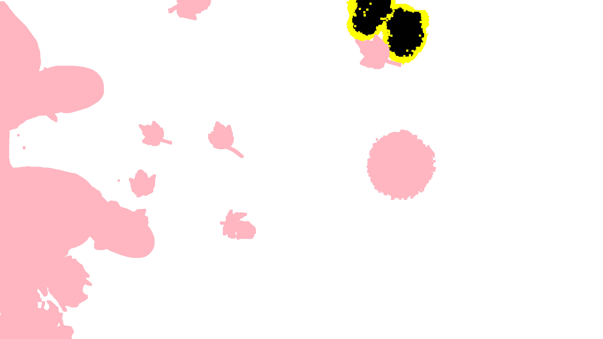
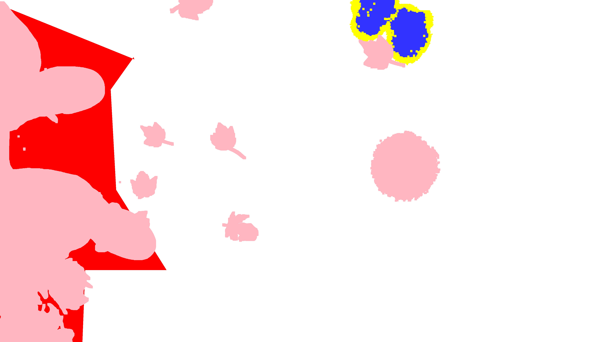

Composite with Color Mask: leaves-mask_composite.jpg

| Purpose | Color | Evaluated |
|---|---|---|
| add | N | |
| remove | Y | |
| add | N | |
| add | N | |
| clone | N | |
| heal | N |

Composite with Color Mask: leaves-mask_composite.jpg
|
|
 Colorized Reference Mask |
 Original System Output Mask |
|||||||||||||||||||||
|  Binarized Reference Mask (Black = Manipulated, Yellow = Boundary No-Score Zone, Pink = Selective No-Score Zone) |
 Binarized System Output Mask (Black = Manipulated, Threshold <= 0) |
|||||||||||||||||||||
 No-Score Zone (Yellow = Boundary No-Score Zone, Pink = Selective No-Score Zone) |
 Evaluation Result Visualization |
|||||||||||||||||||||
| NIMBLE Mask Metric (NMM): -1.0 Matthews Correlation Coefficient (MCC): -0.032 Binary Weighted L1 Loss (WL1): 0.083 Grayscale Weighted L1 Loss (WL1): 0.083 |
Total Pixels: 8189855
|